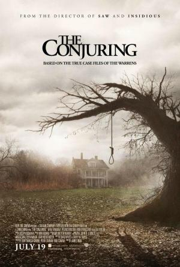
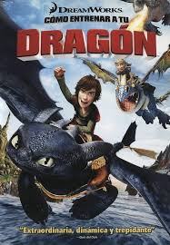

Acción y Aventuras
Director: Michael Apted
2.- Avatar
Fecha filmación: 2009
Director: James Cameron
Actores destacados:
- Sam Worthington
- Zoe Saldaña
- Kate Winslet
- Michelle Rodriguez
3.- Gladiator

Fecha filmación: 2000
Director: Ridley Scott
Actores destacados:
- Rusell Crowe
- Joaquin Phoenix
- Connie Nielsen
- Oliver Reed
Comedia
1.- El lado bueno de las cosas
Fecha filmación: 2012
Director: David O. Rusell
Actores destacados:
- Bradley Cooper
- Robert de Niro
- Jennifer Lawrence
- Chris Tucker
2.- Solo en casa

Fecha filmación: 1990
Director: Chris Columbus
Actores destacados:
- Macaulay Culkin
- Joe Pesci
- Daniel Stern
- Kieran Culkin
3.- La vida de Brian

Fecha filmación: 1979
Director: Terry Jones
- Actores destacados:
- Terry Jones
- John Cleese
- Graham Chapman
- Terry Gilliam
Drama
1.- La vida es bella

Fecha filmación: 1997
Director: Roberto Benigni
- Actores destacados:
- Roberto Benigni
- Nicoletta Braschi
- Giorgio Cantarini
- Amerigo Fontani
2.- Cadena perpetua

Fecha filmación: 2022
Director: Fernando Meirelles
Actores destacados:
- Alice Braga
- Alexandre Rodrigues
- Douglas Silva
- Phellipe Haagensen
3.- Ciudad de Dios

Fecha filmación: 2000
Director: Ridley Scott
- Actores destacados:
- Rusell Crowe
- Joaquin Phoenix
- Connie Nielsen
- Oliver Reed
Ciencia Ficción y Fantasía
1.- Dune: Parte 2

Fecha filmación: 1997
>Director: Denis Villeneuve
- Actores destacados:
- Roberto Benigni
- Nicoletta Braschi
- Giorgio Cantarini
- Amerigo Fontani
2.- El laberinto del fauno

Fecha filmación: 2022
Director: Guillermo del Toro
Actores destacados:
- Ivana Baquero
- Doug Jones
- Ariadna Gil
- Maribel Verdú
3.- El efecto mariposa
Fecha filmación: 2000
Director: Eric Bress
- Actores destacados:
- Aston Kutcher
- Amy Smart
- Logan Lerman
- William Lee Scott
Terror y Suspense
1.- Expediente Warren: The Conjuring
Fecha filmación: 200
Director: James Wan
- Actores destacados:
- Vera Farmiga
- Patrick Wilson
- Sterling Jerins
- Shannon Kook
2.- La purga

Fecha filmación: 2013
Director: James DeMonaco
- Actores destacados:
- Ethan Hawke
- Lena Headey
- Adelaide Kane
- Edwin Hodge
3.- El resplandor

Fecha filmación: 1980
Director: Ridley Scott
- Actores destacados:
- Jack Nicholson
- Shelley Duvall
- Danny Lloyd
- Lia Beldam
Documentales
1.- Lo que el pulpo me enseñó

Fecha filmación: 2020
Director: Pippa Ehrilch
- Actores destacados:
- Craig Foster
- Tom Foster
2.- Remando como un sólo hombre
Fecha filmación: 2009
Director: George Clooney
Actores destacados:
3.- Everest

Fecha filmación: 2015
Director: Baltasar Kormákur
- Actores destacados:
- Jake Gyllenhaal
- Josh Brolin
- Jason Clarke
- John Hawkes
Infantiles y Familiares
1.- Los Goonies

Fecha filmación: 1985
Director: Richard Donner
- Actores destacados:
- Sean Astin
- Josh Brolin
- Corey Feldman
- Jeff Cohen
2.- Como entrenar a tu dragón
Fecha filmación: 2010
Director: Chris Sanders
Doblajes destacados (al castellano) :
- Jose Luis Angulo
- Laura Pastor
- Julio Lorenzo
- Adrián Viador
3.- Shrek

Fecha filmación: 2001
Director: Andrew Adamson
- Doblajes destacados (al castellano):
- Juan Muñoz
- José Mota
- Nuria Mediavilla
- Juan Carlos Gustems